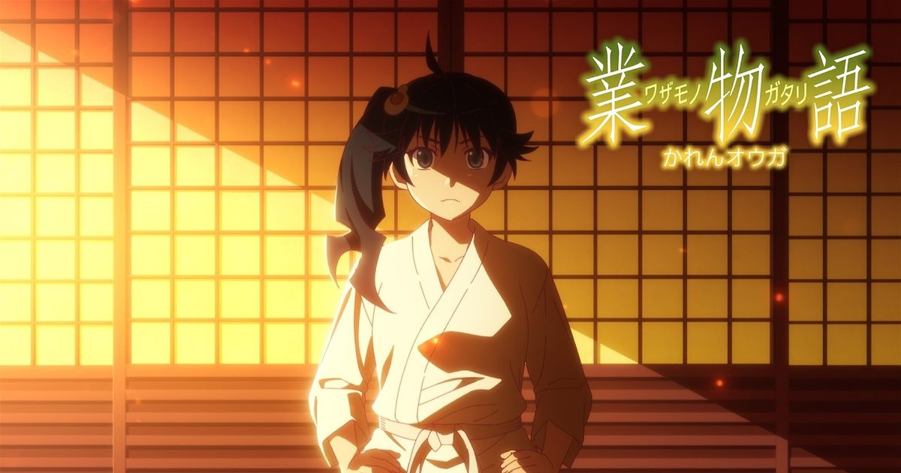

2026-11-27 · 动画 / 深度解读

11 月 27 日，Aniplex 把今年最后一张牌摊开了：《〈物语〉系列 第外季&第怪季》新章「业物语 かれんオウガ」将于 12 月 31 日东京时间 21:00 播出， 平台是 Tokyo MX、BS11、群马电视台、栃木电视台四台。同步解禁第二弹主视觉、第 1 弹 PV、以及主题歌—— 由 23 岁的紫今（Mulasaki Ima）演唱的《シェルター》（Shelter）。
制作阵容一个没换：总监督新房昭之、导演吉泽翠、系列构成东富耶子与新房昭之、角色设计与总作画监督渡边明夫，SHAFT 制作。 喜多村英梨继续为阿良良木火怜配音。
这些都是对的。但从 7 月第一次公布到今天，中文圈对这部新作的称呼一直是错的—— 不是译得不好听，是把一个双关翻没了。
目前中文媒体上流通的写法主要有两种：「火怜·欧加」和「火怜·食人魔」。 前者是音译，后者是意译。两种都漏掉了同一个东西。
日文原题是「業物語 かれんオウガ」。这里的「オウガ」不是英语 Ogre 的音译， 而是地名「逢我」（おうが）——火怜被派去修行的那片山脉，叫「逢我三山」。 而西尾维新故意把它写成片假名，因为「逢我」和「Ogre」在日语里同音。 一个假名，同时指向一座山和一个食人魔。
证据在官方自己身上：Aniplex 给英文媒体的片名就是 Karen Ogre。 所以「食人魔」不是中文译者瞎猜的，是官方英译主动选了双关的另一半。 问题出在第二跳——中文从英文回译时，把 Ogre 又译成了「欧加 / 食人魔」， 山名就这么消失了。
而这座山的名字不是随便起的。逢我三山由三座山组成：
也就是说，「逢我」不是纯粹的风景地名，它本身就是由怪异与民间故事拼出来的一座山。 鬼、针、咔嚓咔嚓山——三个词各自带着日本怪谈的出处。 把「オウガ」翻成「欧加」的那一刻，这层信息就全丢了。
顺便说，这也是《业物语》这本书的命名体例。全书由四个「第零话」构成，每一话都是 「角色名 + 英文单词的片假名」的形式： 「あせろらボナペティ」（Acerola Bon Appétit）、「かれんオウガ」（Karen Ogre）、 「つばさスリーピング」（Tsubasa Sleeping）。 西尾要的就是这个效果：让读者先看到音，再自己去找它对应的汉字。
官方简介写的是「为了迈向下一阶段，火怜被命令去山里闭关修行」。中文报道基本照抄，写成「深山修行」。 但原著里师父给的指令要具体得多，也残酷得多——是「滝行」，瀑布苦行。
原著里的几个细节，中文报道一个都没提：
最后这一条是整篇最有戏的设定。这一话的「监视者」是小忍，不是历。 一个兄长不亲自去、也不阻止，而是把最不该离开自己身边的那个存在派出去跟着妹妹—— 这个安排本身就说明，历对这件事的担心程度，和他愿意给出的自由，是同时存在的。
还有一层值得说：「淋水」在物语系列里从来不是小事。 《凭物语》开场是浴缸，《伤物语》是血，《化》里是雨。 西尾写「水」的时候，基本都在写「洗掉什么」或「露出什么」。 所以这次把火怜按在瀑布底下，不是让她锻炼身体——是让她被冲一遍。
「修行」这个词把这件事说得太温和了。一个十六岁的人，一个人翻三座山，站在瀑布底下， 中途没有同伴（除了暗中跟着的吸血鬼），唯一的指令是「撑不住就回头」。 这不是练功，这是一次被允许的独自离家。
12 月 31 日这个日子，在《物语》系列的历史里出现过不止一次。把三次摆在一起，能看出一些不太好明说的东西。
| 年份 | 作品 | 形态 | 播出方式 |
|---|---|---|---|
| 2012-12-31 | 猫物语（黑） | 四话 | 地上波 + 卫星 + 网络，年末集中放出 |
| 2014-12-31 | 凭物语 | 四话连播，约 99 分钟 | 22:00 起，TOKYO MX / BS11 / niconico 三线同时 |
| 2026-12-31 | 业物语 火怜·逢我 | 单话 | 21:00 起，地上波四台 |
三次都是「年末」，但每一次的排法都不一样。
2014 年的《凭物语》是一个很激进的做法：地上波、卫星、网络三个渠道同时开播。 官方的说法是「让全国观众在同一时刻看到」。 2024 年的《第外季&第怪季》则走了另一个极端——ABEMA 独占先行配信，14 话从 7 月播到 10 月，Crunchyroll 负责海外同步。
这次回到了地上波，而且只有四个台（Tokyo MX、BS11、群马、栃木），没有提网络同步。 这个选择放在 2026 年看，其实相当反常：现在日本动画的主流是「配信先行、电视跟上」，反过来的越来越少。
我们的读法是：这不是发行策略的进步，是把播出本身当成一个事件的需要。 除夕这种日子，观众是聚在电视机前的。一个只在流媒体上线的除夕特番，和一个占住地上波黄金档的除夕特番， 在日本社会的存在感完全是两件事。台数变少了，但「位置」变正统了。
2014 年那次是 22:00 起四话连播，全长 99 分钟——刚好跨过零点。 这次是 21:00 起、单话。东京 21:00 等于北京时间 20:00。 官方没公布时长，若按常规单话长度推算，北京 20:30 前后就结束了。
落差就在这里：它从「跨年的仪式」变成了「年夜饭前的一道菜」。 十二年前那部是陪你把这一年送走的；这一部是让你在出门吃饭之前先看一集。 这不一定是退步——单话更容易塞进任何人的时间表，也更容易被新观众当作入口。 但「仪式感」这个东西，是拿时长换来的，一话换不回来。
上一话是 2024 年 10 月播出的第 14 话。到 2026 年 12 月 31 日，中间隔了约 26 个月。 26 个月之后端上来的是一话，不是一季。
这才是这次公告里最该被讨论、却几乎没人讨论的数字。 因为它指向一个具体的问题：《物语》系列现在缺的不是素材，是产能。 《业物语》剩下还有「あせろらボナペティ」和「つばさスリーピング」， 《抚物语》《结物语》整本未动，《续终物语》（2025 年 10 月出版）还热着。 素材多到可以排三季。可他们给出的是一话。
一话特别篇，是维持一个 IP「仍在播出」状态成本最低的形态： 不需要凑够 12 话的排期、不需要谈一整季的档、不需要为新观众做完整的入口设计。 它只需要在某一天，让所有还记得的人同时打开电视。 从运营角度这是聪明的；从作品角度，这说明这部剧暂时没有被安排「继续长大」。
还有一个时间线上的小矛盾，值得单独说。
火怜在《伪物语》时期是初三。这一话里她是高一。 按年龄推算，故事发生在《伪物语》之后一年多，那时候历已经上了大学—— 也就是说，它在时间线上其实落在《第怪季》的范围内，不是「以前」，是「以后」。
但西尾把它编成了「第零话」。
我们的理解是：他定义「起点」的标准不是年龄，是「第一次一个人离开家」。 火怜不是从出生开始成为火怜的，也不是从拜师那天开始的—— 是从她背着包、独自翻过三座山、站在瀑布底下那一刻开始的。 所谓「第零话」，写的是一个人格的开工日，不是一个人的生日。
这也解释了官方标语为什么是那句：「青春は、登り続ける物語。」（青春，是不断攀登的故事。） 而十二年前《凭物语》的宣传语，中文通译是「青春，是告别的话语」。 同一个句式，一头是「结束」，一头是「继续爬」。 十二年过去，系列把这句话交给了妹妹来说。
分数打给「这次安排」：主视觉和 PV 的质量在线，制作阵容没有松动，除夕档的位置也坐得正。 扣分在两处——一话的体量配不上 26 个月的等待； 以及中文标题的误译，正在让这部作品失去它最好的一层入口。
一、主题歌交给了一个「看着它长大」的人。 紫今今年 23 岁，说自己从小学开始实时追这部作品。这个选择很物语—— 系列的宣传语一直在讲青春，现在让一个真正处在青春尾巴上的人来写主题歌，比请任何一位大物都更对题。 歌名《シェルター》（避难所）也贴：这一话讲的是一个十六岁的人第一次离开家，去找一个能待的地方。
二、官方把「逢我」藏在假名里，是中文化的一次系统性失败。 这不是某一家的错。日文原名给的是读音，官方英译选了双关的一边， 中文再回译一次，能指链就断了。类似的损失在过去十年里发生过很多次 （把「物语」译成「故事」、把「怪异」译成「怪物」）。 我们的建议很简单：涉及西尾作品的中文标题，至少保留一个注解。
三、这次没有公布海外配信安排。 2024 年《第外季&第怪季》是 Crunchyroll 同步的，这次公告只提了日本四台。 按惯例海外会跟上，但目前没有官方口径——中文观众要有等字幕组或者等一周的心理准备。
我们不太想把这一话称作「新作动画」。它更像是一次排期上的补位： 用一话特别篇，把「《物语》还在播」这个事实续上，同时给 SHAFT 和 Aniplex 留出继续谈下一季的空间。
这不必然是坏事。一话的成本低、风险小，如果它反响好，下一季的立项会更容易。 但如果三年之后我们拿到的还是「又一话特别篇」，那答案就很清楚了： 这个系列已经从「做作品」变成了「守资产」。 到那时候再谈「有生之年」，就不是玩笑话了。
时差先算清楚。12 月 31 日东京 21:00，对应：
也就是说，中国观众比日本早一小时进入这一话。这在除夕夜是个很实用的信息： 20:00 看完，21:00 还能赶上大部分家庭的年夜饭或跨年节目。 想同步讨论的话，微博和 B 站的话题会比日本那边早一小时热起来。
主题歌《シェルター》会在 12 月 18 日先行配信。我们的建议是： 先听歌，再决定要不要守那一晚。 物语系列的 OP / ED 一向是剧集的情绪索引，听完大致就知道这一话是什么温度了。
至于观看路径：官方目前只公布了日本四台。国内没有正规渠道的话， 请留意 Crunchyroll 是否补上公告——按 2024 年的经验，海外通常会在一周内跟上，但这次没有承诺。
信息来源：Aniplex 官方公告与新闻稿（2026-11-27，经 Anime News Network 报道）、 《〈物语〉系列》官方网站新闻页《最新作「業物語 かれんオウガ」第1弾PV公開！》与作品页故事简介、 Aniplex 官方频道第 1 弹 PV、 原作小说《業物語》（西尾维新，讲谈社 BOX，2016 年 1 月）「第零话 かれんオウガ」中译文本、 《猫物语（黑）》与《凭物语》播出资料（2012 / 2014 年 12 月 31 日）。 逢我三山的山名采用官方日文表述「鬼会山・千針岳・カチカチ山」，中文译名各家不一，文中保留日文原名以便核对。 火怜年龄推断与「第零话」命名动机属编辑部解读，非官方说明。